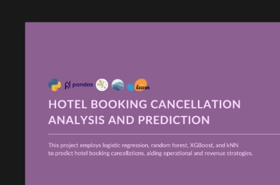

Hotel Booking Cancellation Analysis and Prediction


Title
Hotel Booking Cancellation Analysis and Prediction
Description
This project addresses a significant challenge in the hotel industry: unexpected cancellations of bookings that lead to lost revenue and operational disruptions. By developing a predictive model, the project aims to forecast the likelihood of hotel booking cancellations using booking details, customer data, and historical trends.
The primary stakeholders include hotel management and staff, who can benefit significantly from the model's insights when making decisions related to room allocation, staffing, and overall operational strategies.
To achieve this, the project evaluates four different classification models to identify the most effective solution, ultimately aiming to enhance resource management, revenue handling, and customer service within the hotel sector.
Skills
- Data cleaning
- Exploratory Data Analysis (EDA)
- Data visualization: correlation matrix, bar plots, line plots
- Feature engineering
- Data pre-processing
- Model selection and training using Logistic Regression, Random Forest, XGBoost, and kNN
- Model evaluation based on accuracy
- Feature importance analysis
- Business recommendations
Tools
Notebook
Project notebook covering exploratory analysis, feature engineering, model training, comparison, and hotel booking cancellation prediction.
github.com/minjonyfilm/hotel-booking-cancellation-predictionResults
- Validated assumptions made from the dataset using plots and graphs through Exploratory Data Analysis (EDA).
- Engineered features based on existing dataset characteristics.
- Trained four classification models with different hyperparameter tuning strategies to identify the best-performing model.
- Generated recommendations for hotel management to enhance customer experience and improve resource management.